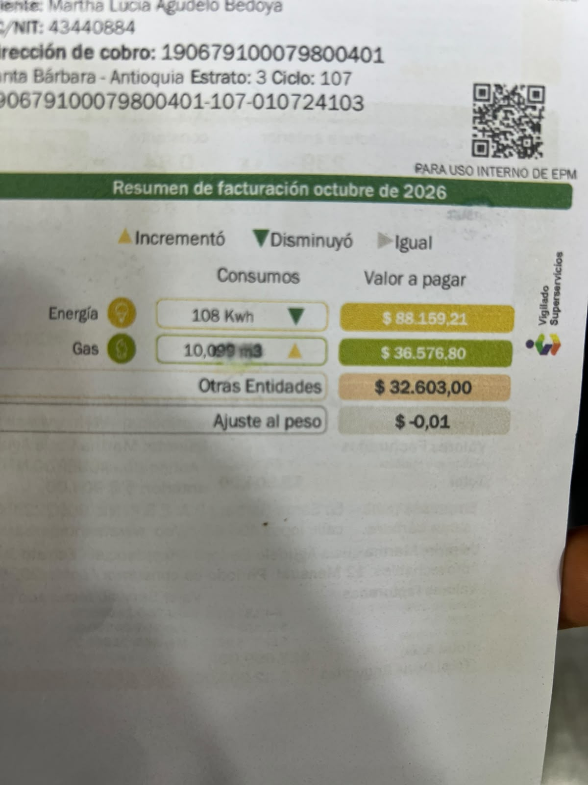

Copia de mi factura
A continuación se muestra la imagen de mi factura con datos sensibles tapados:

Historial de consumo (últimos 6 meses)
Datos del historial que aparece en la factura:
| Mes | kWh consumidos | Valor pagado (COP) | Tarifa promedio (COP/kWh) |
|---|---|---|---|
| Abril 2026 | 115 | $30,980 | 269 |
| Mayo 2026 | 125 | $63,250 | 506 |
| Junio 2026 | 118 | $64,428 | 546 |
| Julio 2026 | 132 | $104,280 | 790 |
| Agosto 2026 | 128 | $120,576 | 942 |
| Octubre 2026 | 108 | $88,159 | 817 |
Comparación: Proyección vs Factura Real
| Concepto | Valor | Observación |
|---|---|---|
| Consumo proyectado (4 equipos) | 810.78 kWh/mes | Basado en equipos analizados en equipos.html |
| Consumo real (Octubre 2026) | 108 kWh/mes | Según factura de energía actual |
| Diferencia | -702.78 kWh/mes (-86.7%) | La proyección es mucho mayor al consumo real |
¿Por qué la diferencia es tan grande?
El consumo real es 86.7% menor que mi proyección. Esto se debe a:
- Horas de uso calculadas incorrectamente: Los equipos no se usan durante todas las horas que asumí.
- La nevera consume mucho menos: Solo 42.21 kWh/mes según su etiqueta, no las 187.56 kWh/semana calculadas (sería 750 kWh/mes).
- Equipos de uso ocasional: Licuadora, batidora y olla arrocera se usan minutos al día, no horas.
- Potencia nominal vs real: Los aparatos raramente funcionan a potencia máxima sostenida.
- Consumo de otros aparatos: El consumo real incluye TV, computador, iluminación, etc., pero es menor al proyectado.
- El consumo real de 108 kWh es muy bajo: Podría indicar que hay equipos que usan menos de lo esperado o no se usan frecuentemente.
Recomendaciones de ahorro para mi familia
1 Monitorear consumo fantasma
Tu consumo de 108 kWh es bajo, lo que es positivo. Mantén desconectados cargadores, televisores y computadores cuando no los uses. Ahorraría aproximadamente 5-10 kWh mensuales, equivalentes a $4,085 - $8,170.
2 Optimizar uso de la nevera
Tu nevera consume 42.21 kWh/mes. Mantenerla a temperatura adecuada (3-5°C), no abrir innecesariamente. Podría ahorrar 3-5 kWh mensuales, equivalentes a $2,451 - $4,085.
3 Usar iluminación LED
Reemplazar todas las bombillas por LED. Esto reduce el consumo de iluminación en 75%, ahorrando aproximadamente 5-8 kWh mensuales, equivalentes a $4,085 - $6,536.
4 Usar equipos eficientemente
Licuadora, batidora y olla arrocera son potentes pero se usan poco. Seguir con el uso responsable. Ahorraría aproximadamente 2-3 kWh mensuales, equivalentes a $1,634 - $2,451.